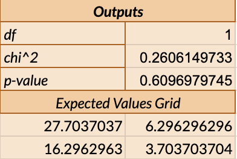
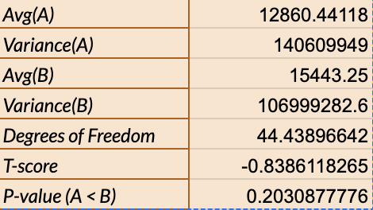
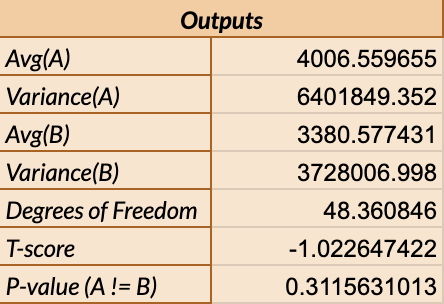

I. Why A/B Testing?
A/B testing involves making small design choices to compare two interfaces in order to find specific changes that may increase or improve user interaction with the site. I was given a simple webpage, where the user has the task of scheduling an appointment. I wanted to determine if the UI changes I made would make it easier for users to accomplish their goal.
Essentially, I wanted to test if and how changing the visuals of a given webpage can make a site more effective. Here are the changes that I thought would be helpful:
- making the buttons a darker blue
- ordering the appointments by date and time
- enlarging the font size of the doctor's name, making it more prominent than the type of care listed
- adding a light blue background to separate each appointment
Version A (original):
Version B (with my changes):
I tested these changes by having users complete the task on both versions of the website and collecting data on various metrics.
II. Hypotheses
The metrics that I looked at were
- misclick rate - the frequency with which users click something else on the page before finding the correct button for the task
- time on page - the time (in milliseconds) spent on the webpage for each user group
- mouse movement distance - the total distance (in pixels) of the user's mouse movements
Misclick Rate
Null Hypothesis: The misclick rate for version B is equal to the misclick rate for version A of the webpage.
Alternative Hypothesis: The misclick rate for version B of the webpage is lower than the misclick rate for version A of the webpage.
Prediction: reject null hypothesis
Reasoning: I made the buttons a darker blue so that it would be easier to see the words, like “Schedule Appointment.” Thus, since the buttons are easier to read with the higher contrast between button color and text color, I predict that there will be fewer misclicks when selecting the correct button. I also changed the background color of each individual appointment in hopes that users could more easily find which buttons correspond to which appointment.
Time on Page
Null Hypothesis: The time spent on version A the webpage is equal to the time spent on version B of the webpage.
Alternative Hypothesis: The time spent on version A of the webpage is longer than the time spent on version B of the webpage.
Prediction: reject null hypothesis
Reasoning: I rearranged the appointments by day and changed the font sizes so that the name of the doctor is larger. I predict that changing the format this way will make it easier to find the correct appointment since the appointments are in chronological order and seem less scattered. In addition, the larger font may make it easier to spot the correct doctor. Thus, I predict the user will end up spending less time on version B of the website.
Mouse Movement Distance
Null Hypothesis: The total distance of the user’s mouse movements in version A of the webpage and version B of the webpage are the same.
Alternative Hypothesis: The total distance of the user’s mouse movements in version A of the webpage and version B of the webpage are different.
Prediction: fail to reject null hypothesis
Reasoning: I predict that we will fail to reject the null hypothesis and that the total distance of the user’s mouse movements will be about the same in both versions of the webpage. In both versions, the correct button to click is near the bottom of the page. Thus, users will have to move their mouse about the same amount down the page to find the button.
III. Statistical Tests and Analysis
To test my hypotheses, I conducted statistical tests, including a one-tailed t-test, two-tailed t-test, and Chi-squared test.
Misclick Rate
Statistical Test Chosen: Chi-squared
=> Since we are comparing the frequencies of two categories, misclicking or not misclicking, we want to use a Chi-squared test.
Metrics: 
Statistical Significance:
The data does not show a significant difference between the rate
of misclicks on version A of the webpage and version B. Since the p-value, 0.60970, is much greater than
our alpha value of 0.05, there is no significant difference between A and B. The p-value can be
interpreted as "There is a 60.970% chance that there is no difference between the groups." Thus,
we fail to reject the null hypothesis. In other words, we cannot conclude that the rate of misclicks
for version A are higher than the rate of misclicks for version B.
Time on Page
Statistical Test Chosen: One-Tailed T-Test
=> We want to use a one-tailed t-test because we are comparing if a continous variable, time on page, is greater for version A of the webpage or version B. Since we want to determine if a value is greater or less than another, we want to use a one-tailed t-test instead of a two-tailed t-test.
Metrics: 
Statistical Significance:
The data does not show a significant difference between the time on page for version A as
compared to version B. The p-value, 0.79691, is greater than the alpha value of 0.05, and
we can interpret the p-value as saying "There is a 79.691% chance that there is no difference
between the groups." In addition, the average time spent on page for version B, 15443.25 milliseconds,
is higher than the average time spent on page for version A, 12860.44 milliseconds. We cannot
conclude that more time was spent on version A, which means that we fail to reject the null
hypothesis.
Mouse Movement Distance
Statistical Test Chosen: Two-Tailed T-Test
=> We want to use a two-tailed t-test because we are comparing if a continous variable, mouse movement distance, is greater for version A of the webpage or version B. Since we want to determine if a value is different from another, we want to use a two-tailed t-test instead of a one-tailed t-test.
Metrics: 
Statistical Significance:
The data does not show a significant difference between total mouse movement distance on
version A and version B. The p-value, 0.31156, is greater than the alpha value of 0.05, and
we can interpret the p-value as saying "There is a 31.156% chance that there is no difference
between the groups." The average total mouse movement distance is greater on version A, but
this difference is not significant. Thus, my prediction was correct that we would fail to
reject the null hypothesis. We cannot say that users moved their mouse a greater total distance
for either of the websites.
IV. Summary Statistics
To understand the general data, we can look at summary statistics.
Version A
For version A, I had 34 data points. From the data, there are 7 users who misclicked, meaning that 20.59% misclicked but most did not. The expected values are 6.296 misclicks out of 27.704, which gives us a percentage of around 22.73% misclicking. The expected values seem to suggest that there should be a higher percentage of misclicks. For time on page, users spent an average of 12860.44 milliseconds, though the median is 8526.5 milliseconds. This suggests that some users spent much more time on the webpage, which raised the average value. There is also a high variance of 140609949, meaning that the mean might not be reliable as there is much variability. For total mouse movement distance, users moved an average of 4006.56 pixels, though there is also a large range of 13557.36 pixels within the data. The high variance of 6401849.352 also suggests high variability among the data.
Version B
For version B, I had 20 data points. 3 users misclicked, which is lower than the expected value of 3.704, meaning that it was expected that there would be a higher frequency of misclicks. For time on page, users spent an average of 15443.25 milliseconds, which is higher than the average time on page for version A. The median is 11524.5 seconds, which is lower than the average. There is also a high variance of 106999282.6 and a range of 37162 seconds. These statistics suggests a lot of variability within the data for time spent on the page, meaning that some users spent a lot more time while others spent less time on the task. For mouse movement distance, the mean is 3380.58 pixels, which is lower than the average for version A. The range is 9241.71 pixels and the maximum mouse movement distance is 10455.13 pixels, both of which are less than the corresponding values for version A. The variance is 3728006, which is also lower than the variance for version A. This may mean that the data for version B is more centered around the mean, and there less variation in the mouse movement distance for version B. Even though the statistics suggest a slightly smaller mouse movement distance for version B than version A, our ststistical analysis did not find a significant difference.
To summarize...
Looking at the statistics of both versions together, we can see that there is a lot of variation in the data. We can't really classify either as a "good" or "bad" webpage because it seems that some people are able to complete the task very quickly while others take a bit longer, no matter which version they are using. It would be helpful to collect data on larger sample sizes, which may aid in reaching more accurate conclusions.
V. Takeaways and Limitations
A main takeaway is that A/B testing is a helpful tool for finding what works! I have to remind myself not to just assume a user's needs and that I am not designing for myself. The changes that I made from the original website were influenced by what I personally thought would be beneficial to users, but I found that the changes actually did not make the webpage more effective. Just because I think something makes logical sense, like ordering the appintments by date and time, does not necessarily mean users will also find it helpful. I really don't know how users will react and interact with the webpage unless I test, and A/B testing is a great way of pinpointing what design changes are effective.
One limitation to the accuracy of this data is that there were different demographics using version A and version B. The data for version A is collected from students taking CS1300, all of whom are familiar with the assignment and webpage. However, since I did not collect enough data during lab for version B, I had to ask people outside of CS1300 to test out the webpage. Unlike students in CS1300, my friends had never seen the webpage prior to data collection. Thus, the task may have taken them longer, resulting in the data showing that version B was in fact not more effective. At the end of the day, I guess we won't know unless we test!